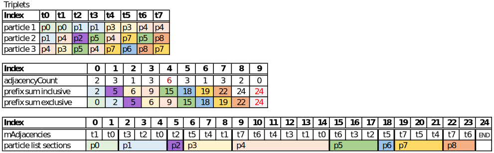
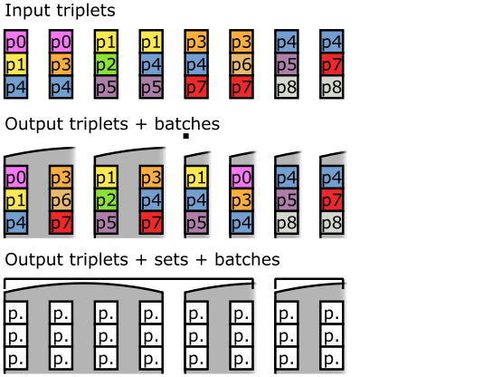

AdjacencyQuerier is a helper class that produces lists of adjacent triplets (triangles) for particles, from the given list of triangles. The algorithm to generate these lists is described in this section.
The result will be stored in one continuous array, instead of separate allocations. For all particles we count how often each particle is referenced by a triangle and store this in adjacencyCount[i] for particle i. This will determine the size of the individual adjacency lists. Next, we calculate the inclusive prefix sum of adjacencyCount and store it in mAdjacencyIndecies (which contains one element more than adjacencyCount, for later use). Now the last element of mAdjacencyIndecies contains the total size of all adjacency lists combined, so mAdjacencies can be allocated.
To generate the adjacency lists we loop through all triplets and store the triplet index in the adjacency list of each particle. We use mAdjacencyIndecies[i]-1 to find the beginning of the adjacency list inside mAdjacencies for particle i. mAdjacencyIndecies[i] is decremented so the next one will be written in a new location. The values in mAdjacencyIndecies will be decremented to be the exclusive prefix sum after all the lists are filled (still pointing to all the beginnings of the lists). The extra element can be used so that the list range can be given like Range<uint32_t>(mAdjacencies[mAdjacencyIndecies[i]],mAdjacencies[mAdjacencyIndecies[i+1]]) without going out of bounds for the last list.
The following tables give example values for the arrays with a square cloth plane of 9 particles (without alternating diagonals):
The triplet scheduler is used to order triplets so that multiple can be processed in parralell (using simd, or gpu parralelism). The triplets need to be reordered in a way that only unique particles are processed at the same time to avoid race conditions and/or result stomping.
This function is used to sort triplets for simd processing on the cpu. The input mTriplets will be reordered in place to create batches of simdWidth triplets that don’t share particles. We keep track of sets of batches, instead of adding padding when a batch cannot be filled. A set is a range of triplets that is successfully divided in batches. A new set should only start after a batch could not be filled with unique triplets. We also track the total amount of padding needed to make the set sizes a multiple of simdWidth, which is used to reserve the size of mPaddedTriplets. Now each set can be copied into mPaddedTriplets with the correct padding without having to resize the list. (this used to be done in SwCloth::setVirtualParticles).
This function is used to sort triplets for cuda/gpu processing. It will generate sets of triplets that can be processed in parallel in a cuda warp, ensuring that no duplicate particles are processed in parallel. It also optimizes the sets to have the least amount of bank conflicts possible.